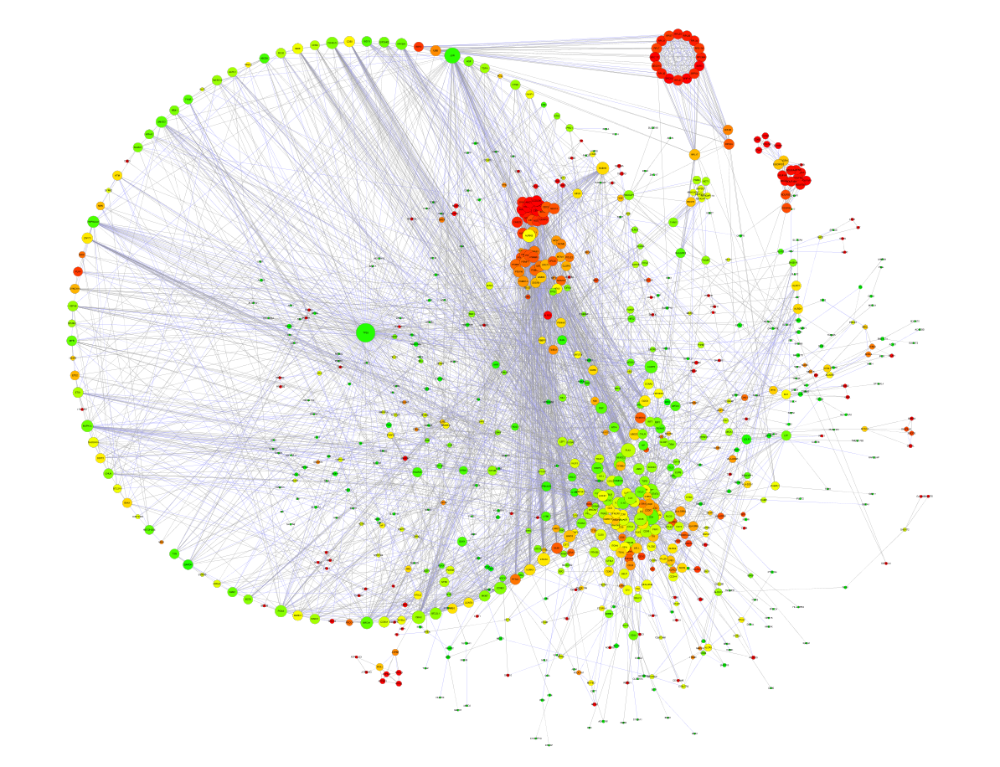

RNA-seq Analysis Report
| Contract ID | HXXXSCXXXXXXXX |
| Contract Name | XXXXXXXXXXXXXXXXXXXX |
| Batch ID | XXXXSCXXXXXXXX-ZXX-JXXX-BX-16 |
| Species | animal |
| Report Time | 2025-01-06 |
| Reminder | Partial results are presented in this report, while full results will be delivered in data release. Hyperlink of results in this report will be only valid in data release, after statement confirmation. |
1 Introduction
From RNA samples extraction to final data, every step of procedures containing samples quality control, library construction and sequencing would directly affect the quality and quantity of data, which determines the bioinformatic analysis results. Novogene promises to strictly control on all production data with high quality output and ensure the raw data accurate and reliable.
Workflow is shown as follows:

Figure 1 Project workflow
2 Library Construction and Sequencing
2.1 Sample Quality Control
Please refer to Novogene’s QC report for methods of sample quality control.
2.2 Library Construction, Quality Control and Sequencing
Messenger RNA was purified from total RNA using poly-T oligo-attached magnetic beads. After fragmentation, the first strand cDNA was synthesized using random hexamer primers, followed by the second strand cDNA synthesis using either dTTP for non strand specific library or dUTP for strand specific library.
For the non strand specific library, it was ready after end repair, A-tailing, adapter ligation, size selection, amplification, and purification(Figure 2.A).
For the strand specific library, it was ready after end repair, A-tailing, adapter ligation, size selection, amplification, and purification(Figure 2.B).
Figure 2.A Workflow of non-directional library construction
Figure 2.B Workflow of directional library construction
The library was checked with Qubit and real-time PCR for quantification and bioanalyzer for size distribution detection. Quantified libraries will be pooled and sequenced on Illumina platforms, according to effective library concentration and data amount.
3 Bioinformatics Analysis Pipeline
The analysis workflow for species without a reference genome is as follows:
Method details involved in the project are available at methods
4 Analysis Results
4.1 Data Quality Control
Original image data file from high-throughput sequencing (like Illumina) is transformed into sequenced reads (called Raw Data or Raw Reads) by CASAVA base recognition (Base Calling). Raw data are stored in FASTQ(fq)(Cock PJ et al., 2010) format files, which contain sequences of reads and corresponding base quality. Each read has four descriptive lines as follow:
FASTQ file:
@A00564:177:HTF77DSXX:2:1101:1416:1031 1:N:0:CCTAATCC+GTACGCAA
TNTAGATCTTAGGCGGTTGGTGTAGGTATCGACACAGGTCTTCATTTTGGCTAATAATGTACCAACGGAAGTCTGACATTCTGACTGTTCTTCTTCCTCTTCTTCCCCATTCTCTGTAGAAAGAGGCAACAACAGCGGCACCATAGATGT
+
F#FFFFFFFFFFFFFFFFFFFFFFFFFFFFFFFFFFFFFF:FFFFF:FFFFFFFFFFFFFFFFFFFFFFFFFFFFFFFFFF:FFFFFFFFFFFFFFFFFFFFFFFFFFF:FFFF:FFFFF:FFFFFFFFFFFFFFFFFFFFF,FFFFFFF
(2) Line 2: base sequences (raw read, A, G, C, and T).
(3) Line 3: the plus sign (+) optionally followed by the same Illumina sequence identifiers and description information as Line 1.
(4) Line 4: the quality values for each base, corresponding to the data in Line 2.
Illumina Sequence Identifier:
| Identifier | Meaning |
|---|---|
| HWI-ST1276 | Instrument – unique identifier of the sequencer |
| 71 | Run number – Run number on instrument |
| C1162ACXX | Flow cell ID – ID of flow cell |
| 1 | Lane Number – positive integer |
| 1101 | Tile Number – positive integer |
| 1208 | X – x coordinate of the spot. Integer which can be negative |
| 2458 | Y – y coordinate of the spot. Integer which can be negative |
| 1 | Read Number - 1 can be single read or Read 2 of paired-end |
| N | Y if the read is filtered out (did not pass), N otherwise |
| 0 | control number - 0 when none of the control bits are on, otherwise it is an even number |
| CGATGT | Illumina index sequences |
The details of Sequencing identifier of Illumina are as follows:
(1) HWI-ST1276:71 HWI-ST1276, Instrument - unique identifier of the sequencer; 71, run number - Run number on instrument.
(2) C1162ACXX:1:1101:1208:2458 means the coordinate of read on C1162ACXX (Flowcell ID) flowcell, line 1, 1101 tile is(x=1208, y=2458).
(3) 1:N:0:CGATGT the first number is 1 or 2, 1 means single reads or the first read of paired ends, 2 means the second of paired ends; the second letter means whether reads is adjusted(Y means yes, N means no); the third number represent the number of Control Bits in sequence; six bases on the fourth place is Illumina index sequence.
4.1.1 Examination of Sequencing Error Rate
The error rate for each base can be transformed by the Phred score as in equation 1. "e" represents sequencing error rate, "Qphred" represents base quality values of Illumina platforms (equation 1: Qphred = -10log10(e)).
| Phred score | ASCII code | error rate | correct rate | Q-sorce |
|---|---|---|---|---|
| 10 | + (10+33) | 1/10 | 90% | Q10 |
| 20 | 5 (20+33) | 1/100 | 99% | Q20 |
| 30 | ? (30+33) | 1/1000 | 99.9% | Q30 |
| 40 | I (40+33) | 1/10000 | 99.99% | Q40 |
Sequencing error rate and base quality varies depending on sequencers, reagent residues, and different sample types. For RNA-seq technology, sequencing error rate distribution can be featured:
(1) Error rate increases with the sequencing reads for consumption of sequencing reagent. It is common in the Illumina high-throughput sequencing platform(Erlich et al., 2008; Jiang L et al., 2011.).
(2) The first six bases have a relatively high error rate due to the incomplete binding of random hexamers used in priming cDNA synthesis(Jiang L et al., 2011). In general, a single base error rate should be lower than 1%.

Figure 4.1 Error Rate Distribution
The x-axis shows the base position along each sequencing read and the y-axis shows the base error rate.
4.1.2 GC Content Distribution
GC content distribution is to detect potential AT/GC separation, which affects subsequent gene expression quantification. In view of random fragmentation and biological law of G/C-A/T content, G and C, A and T should be respectively equal, and the content should be stable throughout the whole sequencing process for non-stranded library (If the library is strand-specific, AT separation or GC separation may occur). A large variation of sequencing error in the first 6-7 bases is allowed considering the usage of random primer in library construction, which is normal that the first few bases have certain preference in existing high-throughput sequencing technology.

Figure 4.2 GC Content Distribution
The x-axis shows each base position within a read, and the y-axis shows the percentage of each base, with each base represented by a different color. The left side of the vertical dashed line is the GC-content of read 1, the right side is the GC-content of read 2.
Result Directory: Result/1.QC/2.GC
4.1.3 Sequencing Data Filtering
The sequenced reads/raw reads often contain low quality reads or reads with adapters, which will affect the quality of downstream analysis. To avoid this, it’s necessary to filter the raw reads and get the clean reads.
Raw reads filtering is as follows:
(1) Remove reads with adapter contamination.
(2) Remove reads when uncertain nucleotides constitute more than 10 percent of either read (N > 10%).
(3) Remove reads when low quality nucleotides (Base Quality less than 5) constitute more than 50 percent of the read.
Adapter Sequences:
P5 adapter：
P5→P7’(5’→3’)
AATGATACGGCGACCACCGAGATCTACAC[i5]ACACTCTTTCCCTACACGACGCTCTTCCGATCT
P7 adapter：
P5→P7’(5’→3’)
GATCGGAAGAGCACACGTCTGAACTCCAGTCAC[i7]ATCTCGTATGCCGTCTTCTGCTTG

Figure 4.3 Composition of Raw Reads
Results are shown as percentage of total raw reads.
(1) Adapter related: (reads containing adapter) / (total raw reads).
(2) Containing N: (reads with more than 10% N) / (total raw reads).
(3) Low quality: (reads of low quality) / (total raw reads).
(4) Clean reads: (clean reads) / (total raw reads).
Result Directory: Result/1.QC/3.Filter
4.1.4 Data Quality Control Summary
The data is summarized in the table below.
Table 4.1 Data Production
| sample | library | raw_reads | raw_bases | clean_reads | clean_bases | error_rate | Q20 | Q30 | GC_pct |
|---|---|---|---|---|---|---|---|---|---|
| B1 | FRAS230282358-1r | 23093152 | 6.9 | 22765127 | 6.8 | 0.03 | 97.79 | 93.87 | 41.23 |
| B2 | FRAS230282359-1r | 23479045 | 7.0 | 23131423 | 6.9 | 0.03 | 97.68 | 93.67 | 41.31 |
| B3 | FRAS230282360-1r | 23731316 | 7.1 | 23409419 | 7.0 | 0.03 | 97.74 | 93.69 | 40.62 |
| G1 | FRAS230282361-1r | 23727127 | 7.1 | 23398301 | 7.0 | 0.03 | 97.61 | 93.42 | 41.38 |
| G2 | FRAS230282362-1r | 23602696 | 7.1 | 23234226 | 7.0 | 0.03 | 97.49 | 93.14 | 41.17 |
| G3 | FRAS230282363-1r | 22356895 | 6.7 | 22002582 | 6.6 | 0.03 | 97.66 | 93.63 | 41.17 |
| EN1 | FRAS230282364-1r | 24134110 | 7.2 | 23566863 | 7.1 | 0.03 | 97.83 | 93.92 | 42.98 |
| EN2 | FRAS230282365-1r | 22173390 | 6.7 | 21778080 | 6.5 | 0.03 | 97.62 | 93.52 | 40.26 |
| EN3 | FRAS230282366-1r | 21352356 | 6.4 | 20888698 | 6.3 | 0.03 | 97.69 | 93.64 | 41.53 |
| LN1 | FRAS230282367-1r | 22256122 | 6.7 | 21741234 | 6.5 | 0.03 | 97.85 | 94.02 | 41.65 |
| LN2 | FRAS230282368-1r | 22756420 | 6.8 | 22064843 | 6.6 | 0.03 | 97.55 | 93.51 | 40.79 |
| LN3 | FRAS230282369-1r | 23671762 | 7.1 | 23182117 | 7.0 | 0.03 | 97.81 | 93.94 | 41.82 |
| EZ1 | FRAS230282370-1r | 22241594 | 6.7 | 21736602 | 6.5 | 0.03 | 96.94 | 92.51 | 40.89 |
| EZ2 | FRAS230282371-1r | 23003439 | 6.9 | 22583325 | 6.8 | 0.03 | 97.54 | 93.49 | 40.99 |
| EZ3 | FRAS230282372-1r | 23662854 | 7.1 | 23169911 | 7.0 | 0.03 | 96.80 | 91.64 | 40.85 |
| LZ1 | FRAS230282373-1r | 23278165 | 7.0 | 22808177 | 6.8 | 0.03 | 97.60 | 93.36 | 38.05 |
| LZ2 | FRAS230282374-1r | 22644931 | 6.8 | 22114204 | 6.6 | 0.03 | 97.74 | 93.79 | 37.18 |
| LZ3 | FRAS230282375-1r | 24036316 | 7.2 | 23500139 | 7.1 | 0.03 | 97.63 | 93.55 | 39.69 |
Result Directory: Result/1.QC/4.Stat/data_table.xls
| Q:The error rate will increase with the higher length of sequencing, what is the acceptable range of error rate? |
Novogene sets a high requirement for sequencing quality. Generally, error rate of single base should be lower than 1%. For special case, the maximum error rate for single base lower than 6% is acceptable. |
| Q:What is the difference between the align software of RNA data and of DNA data? |
To guarantee the quality of bioinformatic analysis, Novogene sets several criteria for getting clean data: 1.Removing the reads with adapter; 2.Removing the reads containing more than 10% N (N represents the uncertain base while base calling); 3.Removing low quality reads (a read containing more than 50% of bases with low quality score: quality score <= 20). |
| Terminology |
adapter: A necessary part for illumina sequencing. It is introduced while library preparation and could be recognized by oligos fixed in flow cell. index: It enables the probability of sequencing several samples simultaneously in the same lane. It is introduced during library preparation and can be used to distinguish samples while data analysis. Q20,Q30: The sequencing quality score of a given base, Q, is defined by the following equation: Q = -10log10(e), where e is the estimated probability of the base call being wrong. A quality score of 20 (Q20) represents error rate of 1 in 100, with a corresponding call accuracy of 99%. Similarly, Q30 means the call accuracy of 99.9%. raw data/raw reads: Data from sequencing platform before data filtering. clean data/clean reads: The filtered data, which is processed by data quality control. All the further bioinformatic analysis are based on clean reads. |
4.2 Transcript Reconstruction
4.2.1 Transcriptome Reconstruction
For samples in the absence of a reference genome, clean reads need to be assembled to get a reference sequence for the following analysis. Trinity(Grabherr MG et al., 2011) is the software chosen to complete the transcriptome reconstruction process.
Trinity is developed by Broad Institute and Hebrew University of Jerusalem. It is a professional transcriptome assembler software (comprising modules entitled Inchworm, Chrysalis and Butterfly). The workflow of Trinity is as follows:
(1)Inchworm: Constructs a k-mer dictionary from all sequenced reads (in practice, k = 31), selects the most frequent seeding k-mer in the dictionary and extends the seed in each direction to form a contig assembly.
(2)Chrysalis: Chrysalis clusters minimally overlapping Inchworm contigs into sets of connected components, and constructs complete de Bruijn graphs for each component. Each component defines a collection of Inchworm contigs that are likely to be derived from alternative splice forms or closely related paralogs.
(3)Butterfly: Butterfly reconstructs plausible, full-length, linear transcripts by reconciling the individual de Bruijn graphs generated by Chrysalis with the original reads and paired ends. It reconstructs distinct transcripts for splice isoforms and paralogous genes, and resolves ambiguities stemming from errors or from sequences >k bases long that are shared between transcripts. The final assembled result file: TRINITY.fasta.
Figure 4.4 Overview of Trinity
(a) Inchworm assembles the reads data set (short black lines, top) by greedily searching for paths in a k-mer graph (middle), resulting in a collection of linear contigs (color lines, bottom), with each k-mer present only once in the contigs.
(b) Chrysalis pools contigs (colored lines) if they share at least one k-1-mer and if reads span the junction between contigs, and then it builds indviduals de Bruijn Graphs from each pool.
(c) Butterfly takes each de Bruijn Graph from Chrysalis (top), and trims spurious edges and compacts linear paths (middle). It then reconciles the graph with reads (dashed colored arrows, bottom) and pairs (not shown), and outputs one linear sequence for each splice form and/or paralogous transcript represented in the graph (bottom, colored sequence).
The sequencing data of assembled transcriptome is recorded as FASTA format as follows:
>TRINITY_DN100_c0_g1_i1 len=347 path=[0:0-346]
CTAGGCAGGGTGGTTGAAGGAATCAGACCTACGTAGCAGATTTCGGGAACACTTGATTGCAATACTGTTTCAGGATTGGA
GCCCTTTATTTTAAGAGTAATTCTAAAGGTATGAGATAGGAGGGCTACTCTGCAAACCCACTAGTAGTCTTCTCTATTTA
AGTTTGTCAAAATATATAGGACAATAATGATAGGTATTAAAATCGTAAGTTTTATTTTATAGATTTTGTTTCTGTGTATG
TAGTAGTAGTTCTAAAAACGAAATTTTAAGTGGCTAAACCTAGTGAATGATAATTTCAGGTGAATGAGTATATTGCATGG
AGAAATGAAAGGTTAAATGGTAATGTG
>TRINITY_DN105_c0_g1_i1 len=359 path=[0:0-358]
TTGCCATAGTATACTCTGTTTTCAGAATGAAACTGTTTTCTTCGTAAGGAACCACTTTGTATTAGTTGTCGTCAGCCTTG
GTATCCTCCCTCATAACACACTCGAACTCAGAATCTAACAGCAGGAAGCTGTTGTCTTTCTTGACGAGCAGGTAGTCTCG
GATTGGGTACACCGAGAGAGCGCTGATTTCGAGCTGGTTGATCTTCTCCATCCGGTTTTTATTGCTGGCGTCAATCGAAT
AAATATTCACTCTGTCTTTGCAAATGGTGAAGATTTAATTTTTTTATGAAATTGTCGCATCGTTGATCGCCCCATTGAGA
TCATAGTCTCCCAGTTTCTTGGCGTTGTGGTCATAGATG
Line 1 starts with '>' character and followed by the id number of the transcript; 'len=' shows the length of the transcript, which is the base number of the transcript; 'path' includes the pathway information from de Bruijn Graph subComponet. From line 2 to the end encodes the sequence information of the transcript. More detailed explanation could be found from Trinity's website http://trinityrnaseq.github.io..
Result Directory: Result/2.Assembly/1.AssembledTranscriptome/Trinity.fasta
4.2.2 Hierarchical Clustering
Corset(Davidson NM et al., 2014) works by clustering contigs based on shared reads, and separates contigs when different expression patterns between samples are observed. Corset also uses the read information to filter out contigs with a low number of mapped read (less than 10 reads by default).
The sequencing data of hierarchical clustering transcriptome is recorded as FASTA format as follows:
>Cluster-23194.0
TCACTTGCTACCCAGCAGAAATATTAACAGCAGGGAAGGTTCATAGAAATAAGCAGAATTTTTATATTAAATTTTCTTAT
TTTTATAGTCATCTAATTTTCATATACATGCCCTCCATCTTAGCTACTAATTTAGTGGCCTCAAATAGGATAGGGAATTA
TTTTGACTTTAAGACTGACGAAGGGATAAGACATGCACAGCAAGTTATTGTTGTTAGGCGATGGTCTAATTATTTTATTG
GAGGCATTACTGTATAAGAAGGAATGAAATCGTGAAATTTCTTGATTTTAAGGAACGTTGACATTCTAAGCTTCCAGAAT
GAGTTTAGAAATAAGGAATTTCTTTTTTCTTTAAGCCAAATTTTAC
>Cluster-29245.103206
GGAAGTCTTTGTAAAAAAATATACAGTATTATATAATCTGTTAGCCTATAATGCAACAAAAGAGTATTTTGAATCCAGAT
CCTATAAAACTTATTTTTTAAAATTTGAATCTTTTTAGTTCCCTAAAAGGAAATATTTCAACCCTAAAAGGAAATATTTC
AAAATAATTGCTTACACTTTCTACAAATTGCTTAAACATAATAATCTTCACTTCATAACTAACTGTACTAGCAATACCAT
TAAAGTGATGAATATAATAATTTTCTGTTGTACTGGTACCACCCTTTAAAGTATTAAAAAAAAAATATTAAAAGAGTACC
CAAAAATAATCTAAAATCAATGCAAGCATAAACCAATTAAATATTACAATGTTCATTTACATCAACAGTGAAAAGTAAAT
ATTTTTTCTTGTCCAACATAAACAGAAATTCTGATCAGCCCCGTCAGCCTTTGTTGTTAACTGTTGGAATATCCACATGT
ATTTGATCTTAATTAAAGCCAAAAGATTCAATAACTTTTGTATTGCCTTTACTATTTCAGTCCAATTCTGAATTTTACTT
TTACTTCTTAAAATGCTCAAGAAACTTCAACATACTGAATAATGAAGATTTGTTCTTTAGAATTTTTTACAAAACTAAAT
ATACTGTAAACTAGCTACTTATAAAAAAAAAAAAAATAGGGAAATCTTGT
Header line starts with '>' character and followed by the sequence id, "Clusters-X.Y". "X" means the super cluster ID, each super cluster contains all contigs that share one or more reads with another contig in the same super cluster. "Y" means the cluster number of the super cluster ID. More detailed explanation could be found from Corset's website https://github.com/Oshlack/Corset/wiki.
Result Directory: Result/2.Assembly/1.AssembledTranscriptome/unigene.fasta
4.2.3 Transcript Length Distribution
Clean reads are de novo assembled by Trinity to get assembly transcriptome. Then Corset will perform Hierarchical Clustering to remove redundence. The longest transcripts of each cluster will be selected as unigenes. Length distribution information of transcripts and unigenes are listed in the following tables:
Table 4.2 Overview of the Number of Transcripts and Unigenes in Different Length Intervals
| Transcript Length Interval | 200bp-500bp | 500bp-1kbp | 1k-2kbp | >2kbp | Total |
|---|---|---|---|---|---|
| Number of transcripts | 143377 | 102692 | 46507 | 33438 | 326014 |
| Number of Unigenes | 73224 | 43789 | 18473 | 12129 | 147615 |
Length_interval: Represents different length intervals of Transcript/Unigene
Number of transcripts: Indicates the number of Transcript in the corresponding length interval
Number of Unigenes: Indicates the number of Unigene in the corresponding length interval
Table 4.3 Overview of the Length Distribution of Transcripts and Unigenes
| Type | min length | mean length | median length | max length | N50 | N90 | total nucleotides |
|---|---|---|---|---|---|---|---|
| Transcript | 301 | 968 | 550 | 26175 | 1418 | 405 | 315515683 |
| Unigene | 301 | 872 | 504 | 26175 | 1183 | 377 | 128671784 |
Min_length: the minimum length of Transcript/Unigene
Mean_length: the average length of Transcript/Unigene
Median_length: the middle length of Transcript/Unigene
Max_length: the maximum length of Transcript/Unigene
N50: spliced transcripts are sorted by length from long to short, and the length of spliced transcripts is N50, which can be used to evaluate the splicing effect.
N90: spliced transcripts are sorted by length from long to short, and the length of spliced transcripts is N90, which can be used to evaluate the splicing effect.
Total_nucleotides: the total number of nucleotides splicing Transcript/UniGene. -N50/N90: Ranking all transcripts by its length from long to short. Adding the length one by one from the first. When the sum is greater than 50%/90% of the total length, the last added sequence length is N50/N90.
Figure 4.5 Length Distribution of Transcripts and Unigene
X-axis indicates length interval of transcript and unigene; Y-axis indicates the frequency of transcript and unigene in each length interval.
Result Directory: Result/2.Assembly/2.AssemblyINFO
4.2.4 Assembly Assesment
Busco (benchmarking universal single copy originals) evaluation is to evaluate the integrity of transcripts by using single copy ortholog library, tblastn, authorus and Hmmer software. We use busco software to analyze the splicing results Trinity.fasta ， unigene.fa and cluster.fasta Evaluate the splicing quality, and evaluate the accuracy and integrity of the splicing results according to the proportion and integrity of the comparison. For the introduction of busco, please refer to the following link: http://busco.ezlab.org/ .
Figure 4.6 Busco evaluation results of spliced transcripts (different colors represent different types of spliced transcripts)
S: Complete Single-Copy BUSCOs
D: Complete Duplicated BUSCOs
F: Fragmented BUSCOs
M: Missing BUSCOs
n: Total BUSCO groups searched
Result Directory: Result/2.Assembly/3.AssemblyAssesment
| Q: What are the main parameters used in reconstruction? |
The main parameters involved in reconstruction: –SS_lib_type: The reconstruction parameter of strand specific library. It is used to distinguish the strand information of reads and enhance the accuracy of reconstruction. –min_kmer_cov: Minimum kmer coverage, and its value is 3 by default in Novogene. This parameter will be used in k-mer filtering. If k-mer’s coverage minor than 3, it will be recognized as a low quality k-mer (Probably, this k-mer is caused by sequencing mistakes) and be discarded in reconstruction. If you focus on genes with low abundance, min_kmer_cov can be set as 2. –min_glue: When contig aggregated to form components, supporting reads was needed: There is n reads spanning the junction area, and expanding (k-1)/2 bases(k is k-mer’s k value, k=31 in TRINITY, which means it expands 12bp in both sides) match. The min_glue is reads number n. In this case, if higher reconstruction quality is desired with reducing the number of produced reconstructed gene, we can modulate this parameter to achieve the goal. |
| Q: In reconstruction, how to deal with strand specific library? |
For strand specific library, TRINITY distinguish the positive and negative strand by –SS_lib_type: Pair-end strand specific library: A: RF=====Reverse Forward, First strand is Reverse, Second is Forward; B: FR=====Forward Reverse, First strand is Forward, second is Reverse; Single-read strand specific library: R=====Reverse, strand is Reverse; B: F=====Forward, strand is Forward. |
| Q: Will singlets sequence file and contig file be provided? |
According to TRINITY algorithm, the final reconstructed sequences is in TRINITY.fasta(see 3.2.1 Transcriptome Reconstruction results), the singlets and contig file are not provided. Details: http://trinityrnaseq.github.io. |
| Q: How do we get unigene? What are the rationale? |
Assembled transcripts by TRINITY in De novo projects are not true representatives of different isoforms, but arise from artifacts such as sequencing errors, repeats, variation in coverage or genetic variation within a diploid individual or pooled population. Hence, the number of contigs produced by a de novo assembly is typically large. Here Corset works by clustering contigs based on shared reads, but separates contigs when different expression patterns between samples are observed. Genes that share sequences, such as paralogues, are likely to have small distances between each other, resulting in many reads are shared. Further more, in order to get the best representation of a gene, Novogene will choose the longest transcript from Corset filtered contigs, which will be annotated and fed into following analysis. This method is widely used in RNA-seq analysis and also officially recommended by TRINITY. |
| Q: Why the same gene can generate different transcripts? |
The transcripts from same gene could be the results of alternative splicing, allele, multiple copy of same gene, homolog, ortholog, etc., which make differences exist among these transcripts. |
| Terminology |
|
k-mer: When you do the continuous splicing on reads with moving size k window, you will get a k length sequence each time, and k-mer are those sequences in length k. For read ATCGTT, k is 3, and you will get following k-mer: ATC,TCG,CGT,CTT. TRINITY k is 31. k-mer Dictionary: It is used to store k-mer and its coverage, where “key” is similar to the index in the real dictionary, “value” is similar to the description in real dictionary. In this case, “key” represents k-mer, and “value” is k-mer’s coverage. “key” is unique, with corresponding unique value. contig: In TRINITY reconstruction, in Inchworm step we will obtain the contig. According to TRINITY algorithm, different contig can not share more than k sequences, therefore, those Inchworm contigs cannot well present different alternative splicings and alleles, which need more process. components: In TRINITY reconstruction, the contigs from Inchworm could be clustered and aggregated by its overlapping relationship, and form the components. They are a set of potential alternative splicing isoform or potential allele representation. de Bruijn graph: In TRINITY reconstruction, in (chrysalis) step, components will be used to form the de Bruijn graph through overlapping relationship, which is used to acquiring the final result sequence and alternative splicing sequence. Unigene: The longest transcript of each gene, was called as unigene, which is a basis for following analysis. N50/N90: Ranking all transcripts by its length from high to low. Adding the length one by one from the first. When the sum is greater than 50%/90% of the total length, the last added sequence length is N50/N90. |
4.3 Gene Functional Annotation
4.3.1 Gene Functional Annotation
To achieve comprehensive gene functional annotation, seven databases are applied by Novogene. The function and characteristics of the seven databases are as follows:
Nr (NCBI non-redundant protein sequences): it is the formal protein sequence databases of NCBI, which includes protein sequence information from GenBank, PDB (Protein Data Bank), SwissProt, PIR (Protein Information Resource), PRF (Protein Research Foundation) etc.
Nt (NCBI nucleotide sequences): it is the formal nucleotide sequence database of NCBI. It includes nucleotide sequence from GenBank, EMBL and DDBJ (but does not contain EST, STS, GSS, WGS, TSA, PAT, HTG).
Pfam (Protein family)(Finn RD et al., 2008): it is the most comprehensive collection of protein domains and families, represented as multiple sequence alignments and as profile hidden Markov models. Many proteins are composed of structural domains while the protein sequence of a specific structural domain possess a certain degree of conservative property. In Pfam database, proteins are classified into different protein families according to their structural domains, and the HMM statistical model of each family's amino acid sequence is established by alignment of the protein sequences. According to the reliability of annotations, PFAM families are classified into two categories, Pfam-A and Pfam-B. Pfam-A family consists of a curated seed alignment containing a small set of representative members of the family, profile hidden Markov models (profile HMMs) built from the seed alignment and an automatically generated full alignment which contains all detectable protein sequences belonging to the family, as defined by profile HMM searches of primary sequence databases. Pfam-B entries are automatically generated from the ProDom database, and are represented by a single alignment. Through HMMER3 program, the established HMM model can be searched to annotate unigenes. More details: http://pfam.xfam.org.
KOG/COG: Both COG (Cluster of Orthologous Groups of proteins) and KOG (euKaryotic Orthologous Groups) are based on NCBI's gene orthologous relationships. COG is specific to prokaryotes while KOG is specific to eukaryotes. According to their evolutionary relationships, COG/KOG divides the homologous genes from different species into different Ortholog clusters. The COG collection currently consists of 138,458 proteins, which form 4873 COGs and the current KOG set consists of 4852 clusters of orthologs, which include 59,838 proteins. As genes from the same ortholog own the same function, the functional annotation can be shared to the other members from the same COG/KOG clusters. More details could be found from the following website: http://www.ncbi.nlm.nih.gov/COG/.
Swiss-Prot: A manually annotated and reviewed protein sequence database. It's a high quality protein sequence database, which brings together experimental results, computed features and scientific conclusions. More details could be found from the following website: http://www.ebi.ac.uk/uniprot/.
KEGG (Kyoto Encyclopedia of Genes and Genome): KEGG is a database resource for understanding high-level functions and utilities of the biological system, such as the cell, the organism and the ecosystem, from molecular-level information, especially large-scale molecular datasets generated by genome sequencing and other high-throughput experimental technologies. It contains KEGG PATHWAY, KEGG DRUG, KEGG DISEASE, KEGG MODULE, KEGG GENES, KEGG GENOME etc. And KO system (KEGG ORTHOLOG) combines each KEGG annotation system. KEGG has established a complete KO annotation system which can accomplish the function annotation of the genome/transcriptome of a newly sequenced species. More details could be found from the following website: http://www.genome.jp/kegg/ .
GO (Gene Ontology): GO is the established standard for the functional annotation of gene products. GO vocabulary is a controlled vocabulary used to classify the following functional attributes of gene products: Biological Process (BP), Molecular Function (MF) and Cellular Component (CC). GO term is the basic unit of GO system. Each term has a unique identifier. The relationship between the GO term of each ontology can form a Directed Acyclic Topology. More details could be found from the website: http://www.geneontology.org/.
The software and parameters used in each database are as follows:
NT: NCBI blast(Altschul SF et al., 1997). The evalue threshold is 1e-5 (Each unigene shows top10 alignment results).
NR, SwissProt, KOG: Diamond(Buchfink B et al., 2015. The evalue threshold is 1e-5 (Each unigene shows top10 alignment results).
PFAM (The prediction of protein structure domain): HMMER package,hmmscan. The evalue threshold is 0.01;
GO (Based on the protein annotation results of NR and Pfam): Blast2GO(Götz et al., 2008) and novogene script. The evalue threshold is 1e-6;
KEGG: KAAS(Moriya Y et al., 2007), KEGG Automatic Annotation Server. The evalue threshold is 1e-5.
The statistics of successfully annotated genes by each database are shown in Table 4.4
Table 4.4 The Ratio of Successfully Annotated Genes
| Statistical Items | Number of Unigenes | Percentage (%) |
|---|---|---|
| Annotated in NR | 41119 | 27.85 |
| Annotated in NT | 28694 | 19.43 |
| Annotated in KO | 19440 | 13.16 |
| Annotated in SwissProt | 5016 | 3.39 |
| Annotated in PFAM | 35538 | 24.07 |
| Annotated in GO | 35535 | 24.07 |
| Annotated in KOG | 15366 | 10.4 |
| Annotated in all Databases | 1012 | 0.68 |
| Annotated in at least one Database | 63750 | 43.18 |
| Total Unigenes | 147615 | 100 |
-
Statistical Items: Annotated Database Type
Number of Unigenes: The number of genes successfully annotated in each Database.
Percentage: The percentage of genes successfully annotated in Database in total unigene number
The venn diagram is mapped with 5 selected database annotation result from 7 database results:
Figure 4.7 The Venn Diagram is Mapped with Database Annotation
Result Directory: Result/3.Annotation/1.GeneFunctionalAnnotation/Annotation.statistics.xls
4.3.2 Gene Annotation Results through Nr Database
Table 4.5 Part of Gene Annotation Results through Nr Database
| Genes | Gene Length | NR GI | NR ID | NR Score | NR Evalue | NR Description |
|---|---|---|---|---|---|---|
| Cluster-23194.0 | 366 | -- | -- | -- | -- | -- |
| Cluster-29245.103206 | 690 | -- | -- | -- | -- | -- |
| Cluster-29245.108386 | 313 | -- | -- | -- | -- | -- |
| Cluster-29245.84315 | 375 | -- | -- | -- | -- | -- |
| Cluster-28564.0 | 303 | -- | -- | -- | -- | -- |
-
Gene ID: The gene ID from Corset results.
Gene Length: The longest length generated by the gene transcript.
NR GI: The GenBank ID of the annotated nucleotide.
NR ID: The NR ID of the annotated nucleotide.
NR Score: Alignment score based on a specific score matrix.
NR E-value: Expected value calculated according to the score, query sequence's length and library size. Evalue essentially represents the false positive rate, the smaller is the better.
NR Description: NR function note description.
The species distribution, E-value distribution and similarity distribution plots are as follows:
Figure 4.8 Nr Distribution
Result Directory: Result/3.Annotation/1.GeneFunctionalAnnotation
4.3.3 GO Classification
After GO annotation, the successfully annotated genes will be grouped into three main GO domains: Biological Process (BP), Cellular Component (CC), Molecular Function (MF).

Figure 4.9 GO Classification
From the top to the bottom, we are showing blasting results: 1) species distribution (long scientific name is represented as “…” ); 2) E-value distribution; 3) similarity distribution
Result Directory: Result/3.Annotation/2.GOclassification
4.3.4 KOG Classification
KOG is divided into groups. Figure 4.10 shows the classifications of the genes successfully annotated in KOG.
Figure 4.10 KOG Classification
The X-axis is the names of KOG groups, and the Y-axis is the percentage of genes annotated under this group in the total annotated genes.
Result Directory: Result/3.Annotation/3.KOGclassification
4.3.5 KEGG Classification
The genes successfully annotated in KEGG can be classified according to the KEGG pathway they joined in.
Figure 4.11 KEGG Classification
The Y-axis is the names of KEGG pathways, and the X-axis is the number of the genes annotated in the pathway and the ratio between the number in this pathway and the total number of annotated genes. The KEGG metabolic pathways gene involved in are divided into 5 branches: C: Cellular Processes, E: Environmental Information Processing, G: Genetic Information Processing, M: Metabolism, O: Organismal Systems.2.4.3 Correlation Analysis. In addition, B: Brite Hierarchies, N: Not Included in Pathway or Brite.
Result Directory: Result/3.Annotation/4.KEGGclassification
| Q: What are the main reasons for low annotation rate? |
Firstly, part of transcriptome data are none-coding; Secondly, annotation rate has a relationship with the species and the annotation database used in annotation step, better annotation in the database will bring better annotation result, usally, the annotation rate will be higher. Finally, the annotation result is the result of mapping the total unigene to the sequence in anntation database, which is highly objective, although more annotated genes will benefit following research. |
| Q: Is the annotation of Gene ontology using Nr top 10 in blast2go? or it has combining it with the data of interpro scan? |
The annotation of Gene ontology not only use Nr top10 through blast2go, but also combine the pfam data in interpro scan. |
| Q: How is the annotation accurary of 7 databases? |
We use 7 main stream database to do the gene functional annotation. The selection of annotation is controlled (For example, blast Evalue<1e-5). Additionally, all the software of annotation are officially recommended (blast2go,KAAS, etc.). Therefore, the annotation from each database should be reliable. Also, different type annotation have different focus(For example, PFAM focus on protein structure domain, KEGG focus on metabolic pathway, detailed description could be found in readme file of final report). |
| Q: What are the paramters of annotation through different databases? |
see 3.4.1 Gene Functional Annotation. |
| Q: Why do not annotate each and every transcripts? |
Different transcripts from same gene could be the results of alternative splicing, allele, multiple copy of same gene, homolog, ortholog and etc, which make differences exist in these transcripts. However, it will be redunct and challenging to annotate all these transcript, usually, the longest transcprit could represent these transcripts. Thus, Novogene choose the longest one in Trinity.Corset.fasta as unigene to do annotation. However, the reference sequence for quantitative analysis is Trinity.Corset.fasta. This method is the main stream method in RNA-seq analysis, also recommended by Trinity. Following differential expression analyis and enrichment analysis are based on gene level, thus the annotation is focusing on gene level. |
| Q: Species catogory in kegg? |
To be simplified, for the limitation of usage of KEGG and GENES database, the phenomenon that plant gene is divided into immunology or other unreasonale term will occur. In annotation of the unigene, we use KAAS. Basically, it apply blast to unigene and the gene in database(KEGG, GENES) to find the mapping of query seq and reference seq. Accoring to the annotation information in the KEGG GENES database divided the mapped reference seq to several KO group, and scoring each K number in the group. According to the scores, it allocates a K number to each query seq, and used the K number to get the funcional and pathway information. For KEGG, GENES databases do not have enough plant species, the annotation information for plant is much less than animals, which is the main reason for wrong annotation term. If needed, we can filtered unwanted term. |
| Q: Diamond software |
Diamond is a software which is based on blast and optimizes it (blastx and blastp). Compared with blast, it could keep a same rate of 90%-99% in short sequence alignment, but greatly improves the mapping speed. |
| Terminology |
|
Evalue: Evalue represents the possibility that two sequences is unrelated, which is used to evaluate the similarity of two sequences. Lower Evlaue means higher similarity. best hit: One gene that has the best matching rate to a specific gene in the target genome. Similarity: The level of similarity between given sequences. Homology: The sequences evolved from a common ancester. When two protein have a common ancester in evolution, we think they are homologous. |
4.4 CDS Prediction
4.4.1 CDS Prediction
CDS prediction can be divided into two steps: 1. Using BLAST to align unigene sequences to databases of NR and Swissprot. If matched, CDS shall be extracted from in the unigene sequences and translated into peptide sequences based on the standard codon table (from 5’ to 3’). 2. Unigenes with no hits while blasting would be analyzed by TransDecoder(3.0.1) to predict their coding regions and determine their sequence direction. Part of results are shown as follows:
CDS extracted from BLAST:
>Cluster-24312.0;orf1 len=396 frame:1 start:1 end:396 probable glutamate receptor [Homarus americanus]
AAAGCCGTGTCATCCTTCGGTAAGGGCAAGCCCATCTCCTTCAGTGAGTCGATGTTCTAC
AGTTGGGCTGTGATGCTGGAAGATCCTCCTATGCAAACCCCTTCCAGTGTCTCTGGCCAG
ATGATGGTCGGATGGTGGCTGGTCGCGAGCCTGTTGATTTCCACCGGCTTCAGGTCGTCT
CTGGTGGCTCACATCACAGTCCCAGGGAAGACGAAACCATTAAACAGCTTCACAGACATG
ATCAAACGACCAAATTACCGCTGGGGCATTGATTCCCGGGTTCATGGGTTTGCCATAAGC
ATTTTTGGCAATAATCCAGACCCAGTCGTCCAGTACGTCGGTAAATCCCTAGAGGTCTCA
AATCTGGAAGACGGATTGAAGAGGACAAGCACCGGA
>Cluster-1212.0;orf1 len=240 frame:2 start:2 end:241 kinesin motor domain protein [Ichthyophthirius multifiliis]||EGR28887.1 kinesin motor domain protein [Ichthyophthirius multifiliis]
CTTGAGCTCTATAATGAAGAAGTCGTCGATCTGCTCTCCGACAACAGAAAAAACAAGCTG
CAGATCCATGAAGATAAAGATAAGGGCGTCTATGTGAAAGATTTGAGTGCTTATCCAGTA
AAAACTGTGGAGGATATGAATAATAAGCTTCGAGAGGGCAGTCAAAACCGGCATGTGGGC
TCCACGGGAATGAACAATGTCTCTTCTCGATCACATTCTATCTTTATGCTGAGAATATAA
Header information interpretation:
>Cluster-X.Y: the sequence ID, the only identifier for the gene;
orf1: pridicted ORF id, one gene may have two or more pridicted ORFs;
len: the base length of this ORF;
frame: the reading frame of this ORF in the original gene, '-' the minus strand;
start: the start position of this ORF in the original gene;
end: the end position of this ORF in the original gene;
gi|***|ref|XP_***|: descriptions of the gene blasted protein.
CDS predicted by TransDecoder
>Gene.9621::Cluster-10.0::g.9621::m.9621 Gene.9621::Cluster-10.0::g.9621 ORF type:internal len:114 (+) Cluster-10.0:1-339(+)
GTAAACGGTAACGATGATTTGCACCCTGAAGGGCCAGAGGGGAATACTGGGTTCGTTGAT
GCGCTTAAGGAAGTACAAAGTAAATATGGAATTATCAGTGAAGAGGACAATGTGGATGAT
AAGGAGGAAGAGGAACAAGGTACTTCGAATGGAAGAGATGGACTTGGTCATACAGATACC
GAAGACAAAGATGAAGAAGATGAAGACTACTGGGAAGGAAAAGATTATGATTTCTGGAAC
AGAGATAACGATGGCAGTGAAGAATACTGGGCAAGGTGGGACGAAAAGGTTGATACTTTA
TGGGATGATGATTACTCAGAATATGATTACGAAAGCTCT
>Gene.12867::Cluster-1000.0::g.12867::m.12867 Gene.12867::Cluster-1000.0::g.12867 ORF type:internal len:102 (-) Cluster-1000.0:3-305(-)
GACAACGACGTCTTAAATCGCACGATTAGGACTGATAAAATATTCACATTTGAAGTCGGG
CATTGCCGATATCAGAATGTGGAGAATTTTCAAAGGAATAACTGCGATGATGAAGATCTT
CAGGTTAAGATCTCTAATACAATATGTAAGGTTATCGAGGGCAAGCTCGTAAAAGCTACG
GAAATAGTCTTTAGGGATAAGACCATTACGATCGAAGACACCTACAATTTTGTCCCTAGC
AATGGCCCCAGCCTGGTTGAAAACGGCAACGGGTCTTCAAAAGGCTCAAACGATGGCTCT
ATA
Result Directory: Result/4.CDSprediction
| Q: Why does functional annotation use 7 databases, while CDS prediction only use NR and SwissProt? |
NR and Swissprot are protein database. Based on the coding of real protein, coding region in the reconstructed gene can be predict. |
| Q: While alignment to the protein database, if the mapped species is far from the target species, how will the result be affected? |
It’s an objective result. If the percentage is not very high, the result wouldn’t be significantly affected. |
| Q: Why some unigenes do not have nucleotide sequence or amino acid sequence? |
Due to the limitation of prediction, it cannot guarantee 100% of inputs have corresponding prediction results. In addition, the non-coding may have ployA and can be detected, these non-coding sequences exist in the result. |
| Q: What are the parameters for BLAST? |
IFor BLAST, we choose Evalue=1e-5. |
| Q: Why doesn’t the results of transcriptome reconstruction and CDS prediction start with ATG? |
Firstly, RNA-seq could include part of UTR or part of non-coding sequence. Thus, the initiate sequences of transcripts could be others instead of ATG. Secondly, since the transcripts are assembled by reads, it could be part of coding area instead of whole coding area, which is similar to the result of CDS prediction. Thus, it is reasonable that the initiation is not ATG. |
| Terminology |
|
ORF: open reading frame, a complete polypeptide could be translated from start codon to end codon in reading frame. CDS: CDS (coding sequence) is used to code protein, which is part of mRNA. |
4.5 Transcription Factor Analysis
iTAK is used to perform the transcription factor analysis of plants. It uses hmmerscan to identify the TF(transcription factor) by predifined TF families and rules in the database. The identify and classify method is published by Perez-Rodriguez et al (2010) and Jin et al (2014). AnimalTFDB database is used to perform the transcription factor analysis of animals.
Table 4.6 Transcription Factor Analysis Results
| tf_id | Subfamily | Family |
|---|---|---|
| Cluster-0.0-0R | MYB-related | MYB->MYB-related |
| Cluster-10289.10299-1F | bZIP | bZIP |
| Cluster-10289.10672-0R | bZIP | bZIP |
| Cluster-10289.10686-2R | GRAS | GRAS |
-
geneID: the ID of genes.
Subfamily: the subfamily of the transcription factors(only for plant).
family: the family name of the transcription factors.
Result Directory: Result/5.TransFactor
4.6 Gene Expression Analysis
4.6.1 Reference Alignment
De novo transcriptome filtered by Corset is used as a reference(ref). RSEM(Li B et al., 2011) will map reads back to transcriptome and quantify the expression level. The summary of mapping results are shown as follows:
Table 4.7 Overview of the Alignment Situation
| Sample Name | Total Reads | Total Mapped |
|---|---|---|
| B1 | 22765127 | 16219376(71.25%) |
| B2 | 23131423 | 16556772(71.58%) |
| B3 | 23409419 | 17490624(74.72%) |
| G1 | 23398301 | 16789867(71.76%) |
| G2 | 23234226 | 16307454(70.19%) |
| G3 | 22002582 | 15557858(70.71%) |
| EN1 | 23566863 | 18013374(76.44%) |
| EN2 | 21778080 | 15552753(71.41%) |
| EN3 | 20888698 | 14529683(69.56%) |
| LN1 | 21741234 | 15500684(71.30%) |
| LN2 | 22064843 | 15892983(72.03%) |
| LN3 | 23182117 | 16780273(72.38%) |
| EZ1 | 21736602 | 15685503(72.16%) |
| EZ2 | 22583325 | 16203271(71.75%) |
| EZ3 | 23169911 | 16467324(71.07%) |
| LZ1 | 22808177 | 17332629(75.99%) |
| LZ2 | 22114204 | 17055843(77.13%) |
| LZ3 | 23500139 | 16235274(69.09%) |
-
Sample Name: Sample name.
Total Reads: Clean reads number.
Total Mapped: Total number of reads that can be mapped to the reference genome.
Result Directory: Result/5.Quant/1.Count
4.6.2 Summary of Gene Expression Levels
To calculate the gene expression level, RSEM analysed the mapping results of Bowtie, and then got the read count for each gene of each sample. Furthermore, converted them into FPKM value. In RNA-seq, FPKM, short for the expected number of Fragments Per Kilobase of transcript sequence per Millions base pairssequenced, is the most common method of estimating gene expression levels, which takes into account the effects of both sequencing depth and gene length oncounting of fragments(Trapnell C et al., 2010).
Table 4.8 Gene Expression Summary
| gene_id | B1 | B2 | B3 | G1 | G2 | G3 | EN1 | EN2 | EN3 | LN1 | LN2 | LN3 | EZ1 | EZ2 | EZ3 | LZ1 | LZ2 | LZ3 | Gene Length | NR GI | NR ID | NR Score | NR Evalue | NR Description | NT GI | NT ID | NT Score | NT Evalue | NT Description | KO ID | KO Name | KO Description | Http Link | Swissprot ID | Swissprot Score | Swissprot Evalue | Swissprot Description | PFAM ID | PFAM description | Gene Ontology Biological Pathway | BP Description | Gene Ontology Molecular Function | MF Description | Gene Ontology Cellular Component | CC Description | KOG ID | KOG Description |
|---|---|---|---|---|---|---|---|---|---|---|---|---|---|---|---|---|---|---|---|---|---|---|---|---|---|---|---|---|---|---|---|---|---|---|---|---|---|---|---|---|---|---|---|---|---|---|---|
| Cluster-23194.0 | 0.00 | 0.00 | 5.00 | 2.00 | 4.00 | 0.00 | 0.00 | 0.00 | 0.00 | 0.00 | 0.00 | 0.00 | 0.00 | 0.00 | 0.00 | 0.00 | 0.00 | 3.00 | 366 | -- | -- | -- | -- | -- | -- | -- | -- | -- | -- | -- | -- | -- | -- | -- | -- | -- | -- | -- | -- | -- | -- | -- | -- | -- | -- | -- | -- |
| Cluster-22704.0 | 0.00 | 0.00 | 11.00 | 0.00 | 0.00 | 0.00 | 0.00 | 0.00 | 0.00 | 0.00 | 0.00 | 0.00 | 0.00 | 0.00 | 0.00 | 0.00 | 0.00 | 0.00 | 441 | -- | -- | -- | -- | -- | -- | -- | -- | -- | -- | -- | -- | -- | -- | -- | -- | -- | -- | -- | -- | -- | -- | -- | -- | -- | -- | -- | -- |
| Cluster-28564.0 | 2.00 | 0.00 | 0.00 | 0.00 | 0.00 | 0.00 | 15.00 | 0.00 | 0.00 | 0.00 | 0.00 | 0.00 | 0.00 | 0.00 | 0.00 | 0.00 | 0.00 | 0.00 | 303 | -- | -- | -- | -- | -- | -- | -- | -- | -- | -- | -- | -- | -- | -- | -- | -- | -- | -- | -- | -- | -- | -- | -- | -- | -- | -- | -- | -- |
| Cluster-29245.108384 | 0.00 | 0.00 | 0.00 | 0.00 | 0.00 | 0.00 | 0.00 | 0.00 | 0.00 | 0.00 | 0.00 | 0.00 | 0.00 | 0.00 | 3.00 | 0.00 | 7.00 | 3.00 | 421 | -- | -- | -- | -- | -- | -- | -- | -- | -- | -- | -- | -- | -- | -- | -- | -- | -- | -- | -- | -- | -- | -- | -- | -- | -- | -- | -- | -- |
| Cluster-24312.0 | 0.00 | 2.00 | 0.00 | 0.00 | 0.00 | 0.00 | 0.00 | 0.00 | 0.00 | 0.00 | 0.00 | 0.00 | 0.00 | 1.00 | 1.00 | 0.00 | 0.00 | 0.00 | 396 | XP_045588862.1 | 299 | 1.41e-31 | uncharacterized protein LOC123750795 [Procambarus clarkii] | -- | -- | -- | -- | -- | -- | -- | -- | -- | -- | -- | -- | -- | PF00060 | Ligand-gated ion channel | GO:0006811 | monoatomic ion transport | GO:0015276 | ligand-gated monoatomic ion channel activity | GO:0016020 | membrane | -- | -- |
-
gene_id: Gene ID.
Sample Name: The read count value of each sample.
Table 4.9 FPKM Result
| gene_id | B1 | B2 | B3 | G1 | G2 | G3 | EN1 | EN2 | EN3 | LN1 | LN2 | LN3 | EZ1 | EZ2 | EZ3 | LZ1 | LZ2 | LZ3 | Gene Length | NR GI | NR ID | NR Score | NR Evalue | NR Description | NT GI | NT ID | NT Score | NT Evalue | NT Description | KO ID | KO Name | KO Description | Http Link | Swissprot ID | Swissprot Score | Swissprot Evalue | Swissprot Description | PFAM ID | PFAM description | Gene Ontology Biological Pathway | BP Description | Gene Ontology Molecular Function | MF Description | Gene Ontology Cellular Component | CC Description | KOG ID | KOG Description |
|---|---|---|---|---|---|---|---|---|---|---|---|---|---|---|---|---|---|---|---|---|---|---|---|---|---|---|---|---|---|---|---|---|---|---|---|---|---|---|---|---|---|---|---|---|---|---|---|
| Cluster-23194.0 | 0.00 | 0.00 | 4.59 | 1.83 | 3.66 | 0.00 | 0.00 | 0.00 | 0.00 | 0.00 | 0.00 | 0.00 | 0.00 | 0.00 | 0.00 | 0.00 | 0.00 | 2.54 | 366 | -- | -- | -- | -- | -- | -- | -- | -- | -- | -- | -- | -- | -- | -- | -- | -- | -- | -- | -- | -- | -- | -- | -- | -- | -- | -- | -- | -- |
| Cluster-22704.0 | 0.00 | 0.00 | 4.78 | 0.00 | 0.00 | 0.00 | 0.00 | 0.00 | 0.00 | 0.00 | 0.00 | 0.00 | 0.00 | 0.00 | 0.00 | 0.00 | 0.00 | 0.00 | 441 | -- | -- | -- | -- | -- | -- | -- | -- | -- | -- | -- | -- | -- | -- | -- | -- | -- | -- | -- | -- | -- | -- | -- | -- | -- | -- | -- | -- |
| Cluster-28564.0 | 5.53 | 0.00 | 0.00 | 0.00 | 0.00 | 0.00 | 13.78 | 0.00 | 0.00 | 0.00 | 0.00 | 0.00 | 0.00 | 0.00 | 0.00 | 0.00 | 0.00 | 0.00 | 303 | -- | -- | -- | -- | -- | -- | -- | -- | -- | -- | -- | -- | -- | -- | -- | -- | -- | -- | -- | -- | -- | -- | -- | -- | -- | -- | -- | -- |
| Cluster-29245.108384 | 0.00 | 0.00 | 0.00 | 0.00 | 0.00 | 0.00 | 0.00 | 0.00 | 0.00 | 0.00 | 0.00 | 0.00 | 0.00 | 0.00 | 1.55 | 0.00 | 2.95 | 1.49 | 421 | -- | -- | -- | -- | -- | -- | -- | -- | -- | -- | -- | -- | -- | -- | -- | -- | -- | -- | -- | -- | -- | -- | -- | -- | -- | -- | -- | -- |
| Cluster-24312.0 | 0.00 | 1.44 | 0.00 | 0.00 | 0.00 | 0.00 | 0.00 | 0.00 | 0.00 | 0.00 | 0.00 | 0.00 | 0.00 | 0.64 | 0.65 | 0.00 | 0.00 | 0.00 | 396 | XP_045588862.1 | 299 | 1.41e-31 | uncharacterized protein LOC123750795 [Procambarus clarkii] | -- | -- | -- | -- | -- | -- | -- | -- | -- | -- | -- | -- | -- | PF00060 | Ligand-gated ion channel | GO:0006811 | monoatomic ion transport | GO:0015276 | ligand-gated monoatomic ion channel activity | GO:0016020 | membrane | -- | -- |
-
gene_id: Gene ID.
Sample Name: The read count value of each sample.
Result Directory: Result/5.Quant/1.Count
4.6.3 Comparison of Gene Expression Levels
To compare gene expression levels under different conditions, an FPKM distribution diagram and box plot are used. For biological replicates, the final FPKM would be the mean value.
Figure 4.12 Different Gene Expression Levels under Different Experimental Conditions
Result Directory: Result/5.Quant/2.Distribution
4.6.4 Correlation Analysis
Biological replicates are necessary for any biological experiment, including those involving RNA-seq technology (Hansen et al., 2010). In RNA-seq, replicates have a two-fold purpose. First, they demonstrate whether the experiment is repeatable, and secondly, they can reveal differences in gene expression between samples. The correlation between samples is an important indicator for testing the reliability of the experiment. The closer the correlation coefficient is to 1, the greater the similarity of the samples. ENCODE suggests that the square of the Pearson correlation coefficient should be larger than 0.92, under ideal experimental conditions(ENCODE Project Consortium, 2004).
Figure 4.13 Sample Correlation
If the samples are more than 4 groups, then only present the scatter diagrams between biological replicates The scatter diagrams demonstrate the correlation coefficient between samples; R2, the square of the Pearson coefficient. Heat maps of the correlation coefficient between samples are also shown.
| Q: What are the differences between FPKM and RPKM? |
Both FPKM and RPKM are used in gene expression level normalization. FPKM will consider the fragment difference in the two read of paired end read, while RPKM consider reads: rather than using read counts, approximates the relative abundance of transcripts in terms of fragments observed from an RNA-Seq experiment, which may not be represented by a single read, such as in paired-end RNA-Seq experiments. |
| Q: What is the gene expression threshold? what is the rationale? |
In bioinformatic analysis without genome reference, we think the gene with FPKM>0.3 is expressed. This threshold is recommend by many prestigious journals and can well reflect the gene expression to large extent. |
| Q: In TRINITY reconstruction result, what is the reason the unmapped case appear and the case that readcount and FPKM are 0? |
The main reason are listed as following: 1: Trinity won’t use all the clean reads. 2: It is related to the mismatch parameter(TRINITY reconstruction allow more mismatch than RSEM. For this reason, the reconstruction result may not be matched in alignment process. 3: The mapping rate in table means the percentage of two end mapping. If only one end is mapped, the read is not be counted (For PE sequencing). |
| Q: Are the transcripts included in gene expression analysis, besides the unigene? |
We use the software RSEM to do analysis, it is compatible with Trinity and can do the quantification on transcripts as well as unigene. Although Novogene do the quantification on unigene and Transcripts in the same time, the following analysis is based on unigene and the result provides the unigene expression level. |
| Q: What dose the sample correlation mean? What is the calculation method? |
The sample correlation represents the similarity among samples. The sample correlation could help us examine the similarity at gene expression level. Higher correlation means higher similarity, and less number of differential express genes. Generally, the correlation between biological replicates should be higher than the correlation of samples with different sources. There are three different calculation methods: A. Pearson correlation; B. Spearman rank correlation; C. Kendall’s τ. Novogene uses R language to calculate the Pearson correlation coefficient. |
| Terminology |
FPKM: expected number of Fragments Per Kilobase of transcript sequence per Millions base pairs sequenced |
RPKM: expected number of reads Per Kilobase of transcript sequence per Millions base pairs sequenced |
4.7 Differential Expression Analysis
The input data for differential gene expression analysis are readcounts from gene expression level analysis. The differential gene expression analysis contains three steps:
1)Readcounts Normalization;
2)Model dependent p-value estimation;
3)FDR value estimation based on multiple hypothesis testing.
Different softwares and parameter sets are applied in different situations. The analysis methods are listed below:
| Type | Software | Normalzation method | p-value estimation model | FDR estimation method | Differentially expressed gene screening stardard |
|---|---|---|---|---|---|
| With biological duplicates | DESeq2(Love MI et al., 2014) | DESeq2 | negative binomial distribution | BH | |log2(FoldChange)| >= 1&padj <= 0.05 |
| Without biological duplicate | edgeR(Robinson MD et al., 2010) | TMM | negative binomial distribution | BH | |log2(FoldChange)| >= 1& padj <= 0.005 |
The readcount value of the ith gene in the jth sample is Kij, then
Negative binomial distribution: Kij ~ NB(μij,σij2)
Poisson distribution: Kij ～ P(μij)
4.7.1 List of Differentially Expressed Genes
The list of differentially expressed genes is as follows:
Table 4.10 Differentially Expressed Genes
| gene_id | B_readcount | G_readcount | log2FoldChange | pvalue | padj | Gene Length | NR GI | NR ID | NR Score | NR Evalue | NR Description | NT GI | NT ID | NT Score | NT Evalue | NT Description | KO ID | KO Name | KO Description | Http Link | Swissprot ID | Swissprot Score | Swissprot Evalue | Swissprot Description | PFAM ID | PFAM description | Gene Ontology Biological Pathway | BP Description | Gene Ontology Molecular Function | MF Description | Gene Ontology Cellular Component | CC Description | KOG ID | KOG Description | Family |
|---|---|---|---|---|---|---|---|---|---|---|---|---|---|---|---|---|---|---|---|---|---|---|---|---|---|---|---|---|---|---|---|---|---|---|---|
| Cluster-29245.42578 | 3.33306852945386 | 1165.43554169564 | -8.4289 | 5.9075e-26 | 6.4337e-21 | 2341 | AFW03837.1 | 3564 | 0.0 | prophenoloxidase [Palaemon carinicauda] | JQ812983.1 | JQ812983 | 2305 | 0 | Exopalaemon carinicauda prophenoloxidase mRNA, complete cds | -- | -- | -- | -- | -- | -- | -- | -- | PF00264 | Common central domain of tyrosinase | -- | -- | GO:0016491 | oxidoreductase activity | -- | -- | -- | -- | -- | |
| Cluster-29245.62562 | 438.530430314354 | 10.7636764683147 | 5.3482 | 1.1498e-20 | 6.2611e-16 | 1046 | -- | -- | -- | -- | -- | -- | -- | -- | -- | -- | -- | -- | -- | -- | -- | -- | -- | -- | -- | -- | -- | -- | -- | -- | -- | -- | -- | -- | -- |
| Cluster-29245.58846 | 235.070369994005 | 4.30805910062435 | 5.7701 | 8.0833e-20 | 2.9344e-15 | 556 | -- | -- | -- | -- | -- | -- | -- | -- | -- | -- | -- | -- | -- | -- | -- | -- | -- | -- | PF06427//PF03493 | UDP-glucose:Glycoprotein Glucosyltransferase//Calcium-activated BK potassium channel alpha subunit | GO:0006813//GO:0006486 | potassium ion transport//protein glycosylation | GO:0003980 | UDP-glucose:glycoprotein glucosyltransferase activity | GO:0016020 | membrane | -- | -- | -- |
| Cluster-29245.65296 | 215.044611830766 | 3.36383882710639 | 5.9936 | 8.991e-17 | 2.448e-12 | 1293 | -- | -- | -- | -- | -- | -- | -- | -- | -- | -- | -- | -- | -- | -- | -- | -- | -- | -- | -- | -- | -- | -- | -- | -- | -- | -- | -- | -- | -- |
| Cluster-29245.58106 | 1769.26380712884 | 59.4122605244778 | 4.8962 | 5.0444e-16 | 1.0987e-11 | 704 | -- | -- | -- | -- | -- | -- | -- | -- | -- | -- | -- | -- | -- | -- | -- | -- | -- | -- | -- | -- | -- | -- | -- | -- | -- | -- | -- | -- | -- |
-
Gene ID: Gene ID.
Sample_readcount: The read count values of sample.
log2FoldChange: log2(Group1/Group2).
pval: The p-value.
padj: The p-value after normalization. The smaller the p-adjusted value is, the more significant is the difference.
4.7.2 Filtering the Differential Expression Gene
The number of differentially expressed genes (including up-regulated and down regulated genes) and the criteria for screening differentially expressed genes are shown in the table below.
Table 4.11 Display of statistical results of differential genes
| compare | all | up | down | threshold |
|---|---|---|---|---|
| BvsG | 804 | 424 | 380 | DESeq2 padj<=0.05 |log2FoldChange|>=1.0 |
| GvsEN | 341 | 316 | 25 | DESeq2 padj<=0.05 |log2FoldChange|>=1.0 |
| ENvsLN | 2701 | 1075 | 1626 | DESeq2 padj<=0.05 |log2FoldChange|>=1.0 |
| LNvsEZ | 4849 | 1025 | 3824 | DESeq2 padj<=0.05 |log2FoldChange|>=1.0 |
| EZvsLZ | 3075 | 982 | 2093 | DESeq2 padj<=0.05 |log2FoldChange|>=1.0 |
-
compare: name of compare.
all: Number of all different genes.
up: Number of up-regulated gene.
down: Number of down-regulated gene
threshold: The software and threshold of differential gene screening by this comparison combination.
The number of differentially expressed genes (including up-regulated and down regulated genes) in each comparison combination was shown by histogram.
Figure 4.14 statistical histogram of the number of different genes in different comparison combinations
Note: gray and blue indicate up-regulated and down regulated differential genes respectively, and the number on the column indicates the number of differential genes.
Volcano plots can be used to infer the overall distribution of differentially expressed genes.
For experiments without biological replicates, the threshold is normally set as: [log2(Fold Change)] >= 1 and q-value <= 0.005.
Figure 4.15 Volcano Plot
The x-axis shows the fold change in gene expression between different samples, and the y-axis shows the statistical significance of the differences. Statistically significant differences are represented by red dots.
The sum of the numbers in each circle is the total number of genes expressed within a group, and the overlap represents the genes expressed in common between groups.
Result Directory: Result/6.Differetial/1.deglist
4.7.3 The Venn Diagram of Differentially Expressed Genes
The Venn diagram presents the number of genes that are uniquely expressed differentially within each group, with the overlapping regions showing the number of genes that are expressed in two or more groups. (The diagram depicts only the results for groups 2, 3 and 4).
Figure 4.16 Venn Diagram of Expression Genes
The sum of the numbers in each circle is the total number of genes expressed within a group, and the overlap represents the genes expressed in common between groups. Use Fpkm>3.0 as the criterion.
Result Directory: Result/6.Differetial/3.Venn
4.7.4 Cluster Analysis of Gene Expression Differences
Cluster Analysis is used to find genes with similar expression patterns under various experimental conditions. By clustering genes with similar expression patterns, it may be possible to discern unknown functions of previously characterized genes or the function of unknown genes. In hierarchical clustering, areas of different colors denote different groups (clusters) of genes, and genes within each cluster may have similar functions or take part in the same biological process.
Figure 4.17 Cluster Analysis
The overall results of FPKM cluster analysis, clustered using the log10(FPKM+1) value. Red denotes genes with high expression levels, and blue denotes genes with low expression levels. The color range from red to blue represents the log10(FPKM+1) value from large to small.
Result Directory: Result/6.Differential/2.Cluster
| Q: How to define differentially expressed genes? How to define the up-regulated gene and down-regulated gene? |
For sample without biological replicates, TMM is first used to normalize the read count value, and DEGseq is used to do the analysis. Filtering threshold are qvalue < 0.005 & |log2FoldChange|>1 ; For differentially expressed gene, if log2Foldchange>0, we defined it is up-regulated and vice versa. |
| Q: Can we use FPKM to do gene expression difference analysis? |
Novogene use readcount to do gene expression difference analysis, which can be normalized by DESeq or TMM. FPKM is a readcount normalization method as well. However, according to the performance of different method indicated in following figure(Dillies MA et al., 2013), DESeq and TMM are better than FPKM. Therefore, FPKM is not recommended.  |
| Q: How to evaluate the gene expression difference among samples? |
Significant difference can be detected by corrected pvalue. The Lower the corrected pvalue is, the higher the signifance. In the meantime, the difference can be evaluated through |log2Foldchange|, higher |log2Foldchange| means larger differences in expression level. |
| Q: What is difference between two FPKM density plot in gene expression analysis and differentially expressed gene analysis? |
FPKM density plot in differentially expressed gene analysis is a combination of all samples, in which different color represent different samples. Through the overall expression distribution, we can examine the difference among samples. However, the FPKM density plot in gene expression analysis only reflects the information of single sample. |
| Q: One gene has very different expression levels in two samples, why it is not in the significantly differentially expressed gene list? |
The selection of differentially expressed gene based on statistical model, the difference in absolute expression level is not sufficient: Firstly: The influence of sequencing depth, higher sequencing depth tend to bring more readcount, which should be offseted by normalization. (In project with biological replicates, Using DESeq; Without biological replicates, Using TMM) Secondly: In differentially expressed gene analysis, we need to estimate the distribution of readcount, empirically, readcount follows negative binomial distribution. In the project with replicates, the quality of replication will affect the result. The worse the replication, some differentially expressed gene will be masked. After estimating the parameter, a statistical examination should be performed. Finally: After pvalue calculation, we need to apply a correction on pvalue basing on multiple hypotheses examination to reduce the false positive. Generally, this process will make padj greater than pvalue, making part of gene passed pvalue threshold be filtered by padj. |
| Q: What is the acceptable threshold range for differentially expressed gene analysis? |
There is no determined conclusion for the choose of threshold. Generally, The requirement will be more strict in better journal. However, in some papers such as PLOS ONE, the requirement on threshold is not that strict. For example, In some papers without biological replicates, the author will only use qvalue without log2foldchange. |
| Q: How to calculate the foldchange and pvalue for gene with 0 readcount? |
In DESeq, if one gene have a corrected readcount equals to 0 in one sample and readcount higher than 0 in another sample, foldchange will be INF or -INF; If the gene have 0 readcount in both samples, log2foldchange and pvalue, qvalue will be NA; In DEGseq, if one gene have a 0 readcount in a sample, foldchange, pvalue and qvalue will be NA. |
| Q: In differentially expressed gene list, if one gene have 0 readcount in one sample and have positive readcount in another sample, can we believe that this gene is expressed in one sample and does not in another? |
In project without genome reference, gene with rpkm>0.3 are believed to express; In project with genome reference, gene with rpkm>1 are believed to express. It is not recommended to evaluate expression by readcount. |
| Q: Can we use part of the gene to do differentially expressed gene analysis? |
No, differentially expressed gene analysis is a comprehensive analysis, which is based on the general gene expression. The analysis software also recommend us to use the whole readcount data instead of part gene data, for the whole data contains the information about sequence depth and reads distribution. |
| Q: What is the method for clustering analysis? |
Clustering uses a build-in R package, pheatmap. We focus on the data (union_for_cluster), which is the overlap of gene set of different samples. And we use relative gene expression level, log2(ratios), to do clustering. The clustering will calculate the distance between each genes, and evaluate the relative gene distance through iteration. Finally, it will divide the genes into several subgroups according to gene distance. H-clusger, K-means and SOM are the main clustering method used by us. Most of them can be implemented in R language and other open source softwares. |
| Q: What is clustering for? |
Clustering can be used to determine the different gene expression pattern through gathering the gene with similar expression. These genes with similar expression may have similar function or participate in same pathway and metabolic process. It is possible for us to identify unknown gene function through clustering. Thus, the clustering is useful in expanding biological understanding of gene expression. |
| Q: Why we use padj, can we use pvalue? |
Corrected p value (padj/qvalue), is value after applying multiple statistical hypothesis examination on p-value, which is higher than original p-value and more efficient in control false positive. |
4.8 GO Enrichment Analysis
4.8.1 GO Enrichment Analysis of DEGs
GO is the abbreviation of Gene Ontology (http://www.geneontology.org/), which is a major bioinformatics classification system to unify the presentation of gene properties across all species. It includes three main branches: cellular compares, molecular function and biological process. GO terms with padj <= 0.05 are significant enrichment.
Table 4.12 Significantly Enriched GO terms in DEGs
| Category | GOID | Description | GeneRatio | BgRatio | pvalue | padj | Count | geneID |
|---|---|---|---|---|---|---|---|---|
| CC | GO:0005576 | extracellular region | 35|308 | 1636|31096 | 0.0001938 | 0.021706 | 35 | Cluster-29245.92091,Cluster-29245.57898,Cluster-29245.53192,Cluster-29245.74437,Cluster-29245.38178,Cluster-29245.42186,Cluster-29245.91168,Cluster-29245.7517,Cluster-29245.28638,Cluster-29245.28055,Cluster-29245.65629,Cluster-29245.47178,Cluster-29245.88147,Cluster-29245.46781,Cluster-29245.38785,Cluster-29245.38004,Cluster-32560.1,Cluster-29245.27519,Cluster-29245.59704,Cluster-29245.92287,Cluster-29245.59603,Cluster-29245.21660,Cluster-29245.45485,Cluster-29245.57117,Cluster-29245.28765,Cluster-29245.26862,Cluster-29245.95793,Cluster-29245.73718,Cluster-29245.61514,Cluster-29245.82671,Cluster-29245.91571,Cluster-29245.23811,Cluster-29245.66439,Cluster-29245.15638,Cluster-28618.0 |
| MF | GO:0030234 | enzyme regulator activity | 20|308 | 827|31096 | 0.00079132 | 0.044314 | 20 | Cluster-29245.58546,Cluster-29245.57898,Cluster-29245.28638,Cluster-29245.60273,Cluster-29245.29014,Cluster-32560.1,Cluster-29245.50592,Cluster-29245.53192,Cluster-29245.21660,Cluster-29245.53145,Cluster-31580.0,Cluster-29245.29100,Cluster-29245.42186,Cluster-29245.72043,Cluster-29245.81787,Cluster-29245.59603,Cluster-29245.28801,Cluster-29245.45485,Cluster-29245.91719,Cluster-29245.46781 |
| BP | GO:0007005 | mitochondrion organization | 9|308 | 287|31096 | 0.0045633 | 0.17036 | 9 | Cluster-29245.28765,Cluster-29245.57898,Cluster-29245.38004,Cluster-29245.64143,Cluster-29245.52276,Cluster-29245.59948,Cluster-29245.74689,Cluster-29245.63887,Cluster-29245.62221 |
| MF | GO:0003700 | DNA-binding transcription factor activity | 16|308 | 732|31096 | 0.0088327 | 0.24732 | 16 | Cluster-29245.51732,Cluster-29245.63268,Cluster-29245.50442,Cluster-29245.29947,Cluster-29245.25264,Cluster-29245.30743,Cluster-29245.54662,Cluster-29245.38725,Cluster-29245.56327,Cluster-29245.67695,Cluster-29245.92931,Cluster-29245.91786,Cluster-29245.61096,Cluster-29245.41983,Cluster-29245.67238,Cluster-29245.59326 |
| BP | GO:0048856 | anatomical structure development | 10|308 | 480|31096 | 0.044329 | 0.87399 | 10 | Cluster-29245.7517,Cluster-29245.91682,Cluster-29245.38004,Cluster-29245.23805,Cluster-29245.91571,Cluster-29245.26308,Cluster-29245.73718,Cluster-29245.46218,Cluster-29245.61760,Cluster-29245.48346 |
-
Category: different class of GO id. CC, BP and MF are the abbreviation of cellular component, biological process and molecular function, respectively.
ID: the unique identification id of Gene Ontology database.
Description: function description of Gene Ontology.
GeneRatio: ratio of differentially expressed genes to all genes for this GO term.
BgRatio: in background GO database, the ratio of all genes concerning this GO term to all genes.
pvalue: statistics category term; abbreviation of probability value.
padj: adjusted p-value. Generally, GO terms with Corrected_pValue <= 0.05 are significant enrichment.
Count: the number of differentially expressed genes concerning this GO term.
geneID: the IDs of differentially expressed genes concerning this GO term.
up: the number of up regulation differentially expressed genes concerning this GO term.
Up_Gene_names: the IDs of up regulation differentially expressed genes concerning this GO term.
Down: the number of down regulation differentially expressed genes concerning this GO term.
Down_Gene_names: the IDs of down regulation differentially expressed genes concerning this GO term.


Figure 4.18 GO enrichment Bar Chart of DEGs
Note: the abscissa of classification bar chart is the GO term of the next level of the three go categories, and the ordinate is the number of differential genes annotated to the term (including the sub term of the term). The three different classifications represent the three basic classifications of GO term (from left to right are biological processes, cellular components, and molecular functions)
Figure 4.19 GO enrichment Bar Chart of DEGs
The png format of the statistical histogram of up-regulated genes and down-regulated genes related to GO enrichment(all differential genes)
Result Directory: Result/7.Enrichment/1.GO
4.8.2 GO Enrichment DAG Figure
DAG (Directed Acyclic Graph, DAG) can visually display the enriched GO term of differential expression genes and its hierarchy. (Figure) illustrates the topGO DAGs. Branch means hierarchical relationship and the function ranges become more and more specific from top to bottom. DAG of biological process, molecular function and cellular component are shown respectively in the report.


Figure 4.20 Illustration of topGO DAG
Each node represents a GO term, and TOP10 GO terms are boxed. The darker the color is, the higher is the enrichment level of the term. The name and p-value of each term are present on the node.
| Q: What is the analysis software used in GO Functional Enrichment Analysis |
GO Functional Enrichment analysis uses R package. Enrichment process uses GOseq(Young MD et al., 2010); topGO ACG plotting uses topGO. |
| Q: Generally, GO Functional Enrichment are divided into 2 level, can we do more? |
GO functional enrichment analysis focus on the statistical examiniation on all the annoatated GO term. It can be any level. |
| Q: What is the difference between GO enrichment and GO classification |
GO classfification correlate the gene with its GO function to get genes annotation information. GO enrichment is examining the enrichment of a group gene with similar GO function, which is used to analyze the gene with similar function. |
4.9 KEGG Enrichment Analysis
4.9.1 KEGG Pathway Enrichment Analysis
The interactions of multiple genes may be involved in certain biological functions. KEGG (Kyoto Encyclopedia of Genes and Genomes) is a collection of manually curated databases dealing with genomes, biological pathways, diseases, drugs, and chemical substances(Kanehisa M et al., 2008). KEGG is utilized for bioinformatics research and education, including data analysis in genomics, metagenomics, metabolomics and other omics studies. Pathway enrichment analysis identifies significantly enriched metabolic pathways or signal transduction pathways associated with differentially expressed genes compared with the whole genome background.
Here, N is the number of all genes with a KEGG annotation, n is the number of DEGs in N, M is the number of all genes annotated to specific pathways, and m is number of DEGs in M.
Table 4.13 KEGG Enrichment List
| Category | KEGGID | Description | GeneRatio | BgRatio | pvalue | padj | Count | geneID |
|---|---|---|---|---|---|---|---|---|
| KEGG | ko04916 | Melanogenesis | 11|88 | 142|12110 | 1.39950260298e-07 | 2.54709473742e-05 | 11 | Cluster-29245.7517|Cluster-29245.78753|Cluster-29245.26697|Cluster-29245.91538|Cluster-29245.82385|Cluster-29245.91044|Cluster-29245.43271|Cluster-29245.93580|Cluster-29245.49786|Cluster-29245.75620|Cluster-29245.43421 |
| KEGG | ko00350 | Tyrosine metabolism | 9|88 | 103|12110 | 7.58616639568e-07 | 6.90341142007e-05 | 9 | Cluster-29245.78753|Cluster-29245.91538|Cluster-29245.82385|Cluster-29245.91044|Cluster-29245.43271|Cluster-29245.93580|Cluster-29245.49786|Cluster-29245.75620|Cluster-29245.43421 |
| KEGG | ko04350 | TGF-beta signaling pathway | 6|88 | 101|12110 | 0.000397639381893 | 0.0241234558348 | 6 | Cluster-29245.53192|Cluster-29245.91217|Cluster-29245.64605|Cluster-29245.28801|Cluster-29245.63443|Cluster-29245.33360 |
| KEGG | ko04512 | ECM-receptor interaction | 5|88 | 70|12110 | 0.000553879173338 | 0.0252015023869 | 5 | Cluster-29245.34516|Cluster-29245.26805|Cluster-29245.58090|Cluster-29245.57634|Cluster-29245.28043 |
| KEGG | ko04514 | Cell adhesion molecules (CAMs) | 4|88 | 53|12110 | 0.00165891090396 | 0.0511509876108 | 4 | Cluster-29245.29296|Cluster-29245.76277|Cluster-29245.34516|Cluster-29245.28043 |
-
Category: KEGG database.
ID: the unique identification id of KEGG database.
Description: function description of this pathway.
GeneRatio: ratio of differentially expressed genes to all genes, which are concerned with this pathway.
BgRatio: in background KEGG database, the ratio of all genes concerning this KEGG term to all genes.
pvalue: statistics category term; abbreviation of probability value.
padj: adjusted p-value. Generally, kegg terms with Corrected_pValue <= 0.05 are significant enrichment.
Count: the number of differentially expressed genes concerning in this term.
geneID: the IDs of differentially expressed genes concerning in this term.
up: the number of up regulation differentially expressed genes concerning in this term.
Up_Gene_names: the IDs of up regulation differentially expressed genes concerning in this term.
Down: the number of down regulation differentially expressed genes concerning in this term.
Down_Gene_names: the IDs of down regulation differentially expressed genes concerning in this term.
Result Directory: Result/7.Enrichment/2.KEGG
4.9.2 KEGG Enrichment Plot
KEGG enrichment scattered plot shows the DEGs enrichment analysis results in KEGG pathway. The degree of KEGG enrichment is measured by Rich factor, q-value and the number of genes enriched in this pathway. Rich factor refers to the ratio of the DEGs number in the pathway and the number of all genes annotated in the pathway. Q-value is the p-value after normalization and its range is [0,1]. The smaller q-value is, the more significant the enrichment is. The top20 significantly DEGs enriched pathways are displayed in the report. If the enriched pathways are less than 20, all enriched pathways are displayed.
Figure 4.21 KEGG Enrichment Bar Plot and Dot Plot of DEGs
2.9.3 KEGG Enrichment Pathway
KEGG enrichment pathway shows the DEGs significantly enriched pathways. In the diagram, if this node contains up-regulated genes, the KO node is labeled in red. If the node contains down-regulated genes, the KO node is labeled in green. If the node contains both up and down-regulated genes, the labeled color is yellow.
Figure 4.22 Diagram Showing Significantly Enriched KEGG Pathway
| Q: What are the meaning and advantages of differentially expressed gene enrichment analysis? |
Gene enrichment analysis is a method gathering gene into biological function or pathway through bioinformatic database and statistical tools. This method is a powerful tool in understanding gene function, including GO enrichment analysis and KEGG enrichment analysis. The GO enrichment analysis help us understand the gene function of differentially expressed gene, while the KEGG enrichment analysis help us understand the metabolic pathway that genes partcipated. Understanding the function and participated pathway of differentially expressed gene is one approach for us to explain the difference in phenotype and other biological phenomenon. Gene enrichment analysis has following advantages compared to analysis based on single gene: 1 Higher sensitivity and lower rate of false postive. 2 Integrating the information of gene interaction, the results are more reliable 3 Simutaneously dealing with large gene expression data with uniform classfication information. 4 Being reproductive. |
| Q: What are the meaning of color and node in KEGG pathway figure? |
KEGG Pathway have five types as following: map: Reference pathway ko: Reference pathway (KO) ec: Reference pathway (EC) rn: Reference pathway (Reaction) >org: Organism-specific pathway map Nodes and color: 1 “map” pathway: Node represent a specfic gene, enzyme coded by the gene and related reaction, click the node to get these informations 2 “ko/ec/rn” pathway: In ko pathway, the node only represent a specific gene; In ec pathway, the node represent the related enzyme;In rn pathway, node represent a paticular reaction including the substrates and reaction type. (Background is blue). 3 “org” pathway: Species specific pathway figure, same as map pathway. (The background of species related node is green) Each pathway has a unique ID number, such as map00010, which is the access number in KEGG database. In project without genome reference, it can only be ko -reference pathway. |
4.10 Protein-Protein Interaction Analysis
The protein-protein interaction network is constructed for differential expression gene by searching STRING protein interaction database (http://string-db.org/. Protein-protein interaction is provided as network file which can be imported into Cytoscape(Shannon P et al., 2003) software and visualized and edited. The central organizing metaphor of Cytoscape is a network graph, with molecular species represented as nodes and intermolecular interactions represented as links, that is, edges, between nodes.
(1) Customize network data display using powerful visual styles.
(2) View a superposition of gene expression ratios and p-values on the network. Expression data can be mapped to node color, label, border thickness, or border color, etc. according to user-configurable colors and visualization schemes.
(3) Layout networks in two dimensions. A variety of layout algorithms are available, including cyclic and spring-embedded layouts.
(4) Zoom in/out and pan for browsing the network.
(5) Use the network manager to easily organize multiple networks. And this structure can be saved in a session file.
(6) Use the bird's eye view to easily navigate large networks.
(7) Easily navigate large networks (100,000+ nodes and edges) by efficient rendering engine.

Figure 4.23 Visualization of Cytoscape
| Q: What is the software used in PPI analysis? What is database used in PPI analysis? |
Trough blastx alignment, we can find the interaction relationship of gene in STRING database, then input the interaction data into Cytoscape to visualize the network. |
| Terminology |
clustering coefficient(clustering coefficient): A clustering coefficient is a measure of the degree to which nodes in a graph tend to cluster together. |
Result Directory: Result/7.Enrichment/3.PPI
5 Appendix
5.1 Software
| Analysis | Software | Version | Parameter | Remark |
|---|---|---|---|---|
| Assembly | Trinity | 2.15.1 | minKmerCov=3 | - |
| min_glue=4 | ||||
| Corset | 1.09 | -f ture, Default, -m 10 | remove redundancy | |
| BUSCO | 3.0.2 | -m tran | - | |
| Gene Functional Annotation | Diamond | 2.1.6 | e-value = 1e-5 | NR, KOG/COG, Swiss-Prot |
| Diamond, KAAS | 2.1.6 | e-value = 1e-5 | KEGG Annotation | |
| NCBI blast | 2.13.0 | e-value = 1e-5 | NT Annotation | |
| hmmscan | HMMER 3.4 | e-value = 0.01 | Pfam Annotation | |
| blast2go | b2g4pipe_v2.5 | e-value = 1e-6 | GO Annotation | |
| Mapping and Quantification | RSEM | 1.2.28 | --estimate-rspd -mismatch-rate 0.3 | mapping to Corset filtered transcriptome |
| Mutation | BCFtools | 1.21 | bcftools mpileup -q 1 -C 50 -m 2 -F 0.002 -Ou -f | - |
| SSR Analysis | MISA, primer3 | primer3-2.6.1 | SSR: 1-10 2-6 3-5 4-5 5-5 6-5 | Misa detect SSR, primer3 Primer Design |
| Differential Expression Analysis | DESeq2 | 1.42.0 | padj <= 0.05 |log2(foldchange)| >= 1 | For sample with bio-replicate using DESeq2, samples without bio-replicate using EdgeR. |
| edgeR | 4.0.16 | padj <= 0.005 & |log2(foldchange)| >= 1 | ||
| GO Enrichment | GOSeq, topGO | 1.32.0, 2.32.0 | Corrected P-Value <= 0.05 | - |
| KEGG Enrichment | KOBAS | v3.0 | Corrected P-Value <= 0.05 | - |
| Protein-Protein Interaction Analysis | diamond blastx | 2.6.1 | e-value = 1e-10 | Using blast, String database. |
5.2 Methods
Click to open the method(pdf), and the corresponding file can be viewed directly.
File catalog:methods
5.3 Result File Decompression Method and Format Description
| Compressed.format | Customer.type | Uncompressed.method |
|---|---|---|
| *.tar | Unix/Linux/Mac user | use tar -xvf *.tar command |
| Windows user | use uncompressed software such as WinRAR, 7-Zip et al | |
| *.gz | Unix/Linux/Mac | Command line: gzip –d *.gz |
| Windows | Software: such as WinRAR, 7-Zip et al | |
| *.zip | Unix/Linux/Macr | Command line: unzip *.zip |
| Windows | Software: such as WinRAR, 7-Zip et al |
| File.type | Document.description | Open.mode |
|---|---|---|
| file.readme.pdf | Results' construction files that help customers to undersdand all the results files better. | Windows/Mac user use Adobe Reader/Foxit reader/web browser to open. |
| Unix/Linux user use evince command to open. | ||
| file.fa/.fasta | Fasta format is a text-based format for representing sequences. | Unix/Linux/Mac user use less or more command |
| Windows user use editor Editplus/Notepad++ et al. | ||
| file.fq/.fastq | Text file that contains sequence data delivered from a sequencer. | Unix/Linux/Mac user use less or more command |
| Windows user use editor Editplus/Notepad++ et al. | ||
| file.vcf | VCF is a flexible and extendable line-oriented text format developed by the 1000 Genomes Project for releases of SNVs, INDELs, copy number variants and structural variants. | Unix/Linux/Mac user use less or more command; |
| file.pdf/.svg | Figure result files; vectorgraph, can be zoomed in or out. It is very convenient for customer to view or edit with Adobe Illustrator. The figure can be used in paper for publish. | unix/Linux user use evince command to open. |
| Windows/Mac user use Adobe Reader/Foxit reader/web browser to open. | ||
| file.txt/xls | Table result file; files are tab delimited. | Unix/Linux/Mac user use less or more command |
| Windows user use editor Editplus/Notepad++ et al, also can use Microsoft Excel to open. | ||
| file.gff/gtf | GFF/GTF is general feature format. | Unix/Linux/Mac user use less or more command; |
| Windows user use editor Editplus/Notepad++ et al. | ||
| file.png | Image file, bitmap with loseless compression. | Unix/Linux/Mac user use display command; |
| Windows user use Image browser，such as photoshop et al. |
6 References
Altschul SF, Madden TL, Schäffer AA, et al. Gapped BLAST and PSI-BLAST: a new generation of protein database search programs. Nucleic Acids Res. 1997;25(17):3389-3402. doi:10.1093/nar/25.17.3389
Buchfink B, Xie C, Huson DH. Fast and sensitive protein alignment using DIAMOND. Nat Methods. 2015;12(1):59-60. doi:10.1038/nmeth.3176
Chepelev I, Wei G, Tang Q, Zhao K. Detection of single nucleotide variations in expressed exons of the human genome using RNA-Seq. Nucleic Acids Res. 2009;37(16):e106. doi:10.1093/nar/gkp507
Cock PJ, Fields CJ, Goto N, Heuer ML, Rice PM. The Sanger FASTQ file format for sequences with quality scores, and the Solexa/Illumina FASTQ variants. Nucleic Acids Res. 2010;38(6):1767-1771. doi:10.1093/nar/gkp1137
Davidson NM, Oshlack A. Corset: enabling differential gene expression analysis for de novo assembled transcriptomes. Genome Biol. 2014;15(7):410. Published 2014 Jul 26. doi:10.1186/s13059-014-0410-6
Dillies MA, Rau A, Aubert J, et al. A comprehensive evaluation of normalization methods for Illumina high-throughput RNA sequencing data analysis. Brief Bioinform. 2013;14(6):671-683. doi:10.1093/bib/bbs046
ENCODE Project Consortium The ENCODE (ENCyclopedia of DNA elements) project. Science. 2004;306(5696):636-640.
Finn RD, Tate J, Mistry J, et al. The Pfam protein families database. Nucleic Acids Res. 2008;36(Database issue):D281-D288. doi:10.1093/nar/gkm960
Götz S, García-Gómez JM, Terol J, et al. High-throughput functional annotation and data mining with the Blast2GO suite. Nucleic Acids Res. 2008;36(10):3420-3435. doi:10.1093/nar/gkn176
Grabherr MG, Haas BJ, Yassour M, et al. Full-length transcriptome assembly from RNA-Seq data without a reference genome. Nat Biotechnol. 2011;29(7):644-652. Published 2011 May 15. doi:10.1038/nbt.1883
Jiang L, Schlesinger F, Davis CA, et al. Synthetic spike-in standards for RNA-seq experiments. Genome Res. 2011;21(9):1543-1551. doi:10.1101/gr.121095.111
Jin J, Zhang H, Kong L, Gao G, Luo J. PlantTFDB 3.0: a portal for the functional and evolutionary study of plant transcription factors. Nucleic Acids Res. 2014;42(Database issue):D1182-D1187. doi:10.1093/nar/gkt1016
Kanehisa M, Araki M, Goto S, et al. KEGG for linking genomes to life and the environment. Nucleic Acids Res. 2008;36(Database issue):D480-D484. doi:10.1093/nar/gkm882
Li B, Dewey CN. RSEM: accurate transcript quantification from RNA-Seq data with or without a reference genome. BMC Bioinformatics. 2011;12:323. Published 2011 Aug 4. doi:10.1186/1471-2105-12-323
Love MI, Huber W, Anders S. Moderated estimation of fold change and dispersion for RNA-seq data with DESeq2. Genome Biol. 2014;15(12):550. doi:10.1186/s13059-014-0550-8
Mao X, Cai T, Olyarchuk JG, Wei L. Automated genome annotation and pathway identification using the KEGG Orthology (KO) as a controlled vocabulary. Bioinformatics. 2005;21(19):3787-3793. doi:10.1093/bioinformatics/bti430
Moriya Y, Itoh M, Okuda S, Yoshizawa AC, Kanehisa M. KAAS: an automatic genome annotation and pathway reconstruction server. Nucleic Acids Res. 2007;35(Web Server issue):W182-W185. doi:10.1093/nar/gkm321
Pérez-Rodríguez P, Riaño-Pachón DM, Corrêa LG, Rensing SA, Kersten B, Mueller-Roeber B. PlnTFDB: updated content and new features of the plant transcription factor database. Nucleic Acids Res. 2010;38(Database issue):D822-D827. doi:10.1093/nar/gkp805
Robinson MD, McCarthy DJ, Smyth GK. edgeR: a Bioconductor package for differential expression analysis of digital gene expression data. Bioinformatics. 2010;26(1):139-140. doi:10.1093/bioinformatics/btp616
Shannon P, Markiel A, Ozier O, et al. Cytoscape: a software environment for integrated models of biomolecular interaction networks. Genome Res. 2003;13(11):2498-2504. doi:10.1101/gr.1239303
Trapnell C, Williams BA, Pertea G, et al. Transcript assembly and quantification by RNA-Seq reveals unannotated transcripts and isoform switching during cell differentiation. Nat Biotechnol. 2010;28(5):511-515. doi:10.1038/nbt.1621
Young MD, Wakefield MJ, Smyth GK, Oshlack A. Gene ontology analysis for RNA-seq: accounting for selection bias. Genome Biol. 2010;11(2):R14. doi:10.1186/gb-2010-11-2-r14
sample: SampleID.
library: The number of libraries.
raw_reads: Reads count from the raw data, four rows as a unit, with statistics of reads count for every sequencing.
raw_bases: Base number of raw data. (number of raw reads) * (sequence length), converting unit to G.
clean_reads: Base number of raw data after filtering. (number of clean reads) * (sequence length), converting unit to G.
clean_bases: (clean base=clean reads*150bp) number multiply read length, saved in G unit.
error_rate: Average sequencing error rate, which is calculated by Qphred=-10log10(e).
Q20: The percentage of the bases whose Q Phred values is greater than 20. (Number of bases with Q Phred value > 20) / (Number of total bases) *100.
Q30: The percentage of the bases whose Q Phred values is greater than 30. (Number of bases with Q Phred value > 30) / (Number of total bases) *100.
GC_pct: The percentage of G&C base numbers of total bases.(G&C base number) / (Total base number)*100.